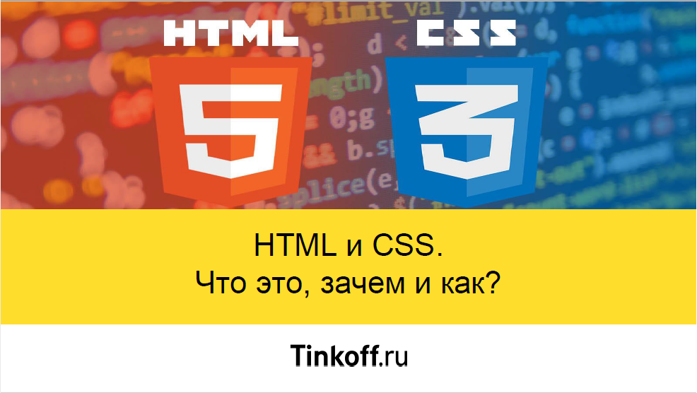

18.10.2017. Доброе утро, мир! Прекраснейший день, чудесное настроение и я уверена, что сегодня всё пройдет именно так, как мне хочется! Без перепадов в настроении и без дождика на улице:) Ну чтоооо ж... Приступим!)
Самое большое не всегда значит самое сложное:) Всё зависит от того, насколько старательно выполнялись предыдущие пункты. Надеюсь, я ничего не упущу и выполню все верно!
Начнем, пожалуй с пересмора презенташки с лекции
Хммм... Вроде все прозрачно... Да и задание не сильно сложнее, чем предыдущие:) Интересно, а в любом html-проекте тоже есть правила хорошего тона? А что если я их не учту? >.< Ну, ладно. Не боимся, делаем. О минусах мне с огромным удовольствием расскажет Саша:))
(вернулься к плану)Зная в каких отношениях находимся я и Github, я бы вообще не стала лезть куда-то и разбираться. Опять же что-нибдь сломаю >.< Но Ватрушка теперь работает и мне никто не поможет разобраться с Гитом... Скорее я должна помочь ему! Он ведь так старается! И я тоже буду!
Нуууу... Сначала почитаем, что это такое. Ааааа.... Сложнасложнасложна. Ну ок. Давай смотреть видосики... Ты так многому за последние полтора месяца научилась! И сейчас у тебя всё получится!!>
Хмм... как быстро.. Подозрительно... Дай боже ничего не сломаааааааааать Т.Т
(вернулься к плану)Ураааааааааа:) Мы справились, как и обещали! Можно побаловать себя отдыхом:) Куда же мы пойдем сегодня?))
В этот чудесный день я уверена, что хочу оказаться там, где всё начиналось. На том самом месте, где я стояла, еще не зная, что так многие мечты сбудутся! Еще переживая из-за каких-то мелочей. Вспомнить, что всё возможно. Абсолютно всё. Именно для меня. Ведь я вижу то, чего многие другие не видят. Именно там, где Ватрушка поделился со мной этим знанием.
Да именно так должен кончиться этот вечер. В счастье, спокойствии и полном осознании, что для меня всё возможно! Дыши глубже. Улыбайся ярче. Это то, кто ты есть на самом деле. И не важно, что в следующий раз ты выспишься не раньше Нового года! Абсолютно неважно! Есть ты, этот огромный и красивый город и множнство возможностей, открытых и еще не опробованных. Дерзай!
(вернулься к плану)